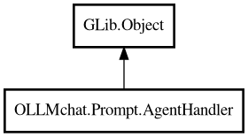

AgentHandler
Object Hierarchy:

Description:
public class AgentHandler : Object
Base handler for agent requests.
Created per message/request and manages the lifecycle of a single request. Wraps the client and handles signal relaying for that specific
request.
This is the default handler for simple agents (like JustAsk) that don't need special system message handling. For agents that need system
message regeneration (like CodeAssistant), use a specialized handler.
Content:
Creation methods:
Methods:
Signals:
- public signal void chat_send (Chat chat)
Signal emitted when a chat request is sent to the server.
- public signal void stream_chunk (string new_text, bool is_thinking, Chat response)
Signal emitted when a streaming chunk is received.
- public signal void stream_content (string new_text, Chat response)
Signal emitted when streaming content (not thinking) is received.
- public signal void stream_start ()
Signal emitted when streaming starts.
Fields:
- protected BaseAgent agent
The agent that created this handler.
- protected Client client
The client instance for this request.
- public SessionBase session
Reference to Session for accessing Manager and tools (Phase 3: tools
stored on Manager).
Inherited Members:
All known members inherited from class GLib.Object
- @get
- @new
- @ref
- @set
- add_toggle_ref
- add_weak_pointer
- bind_property
- connect
- constructed
- disconnect
- dispose
- dup_data
- dup_qdata
- force_floating
- freeze_notify
- get_class
- get_data
- get_property
- get_qdata
- get_type
- getv
- interface_find_property
- interface_install_property
- interface_list_properties
- is_floating
- new_valist
- new_with_properties
- newv
- notify
- notify_property
- ref_count
- ref_sink
- remove_toggle_ref
- remove_weak_pointer
- replace_data
- replace_qdata
- set_data
- set_data_full
- set_property
- set_qdata
- set_qdata_full
- set_valist
- setv
- steal_data
- steal_qdata
- thaw_notify
- unref
- watch_closure
- weak_ref
- weak_unref